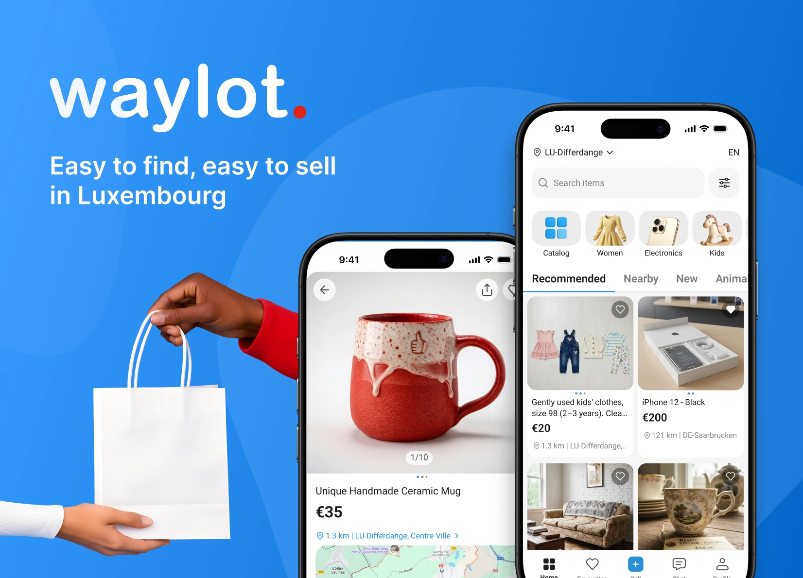
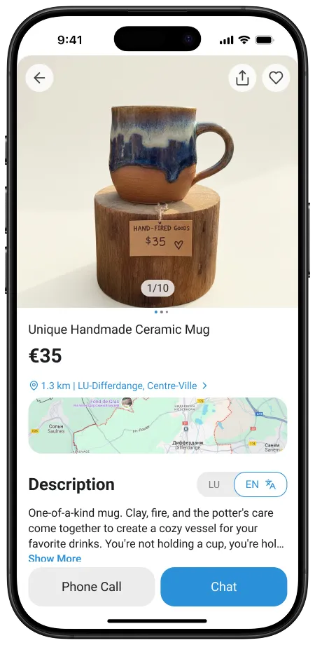

Стартап · 2025
Мультиязычное приложение объявлений для Люксембурга


Люксембург — страна с тремя официальными языками. Приложение поддерживает 15 системных языков с гибкой настройкой: пользователь выбирает язык интерфейса и отдельно — язык перевода контента других пользователей.
ИИ-агент автоматически переводит объявления, описания и чаты. Пользователь переключает перевод/оригинал в одно касание, без перехода на другой экран.
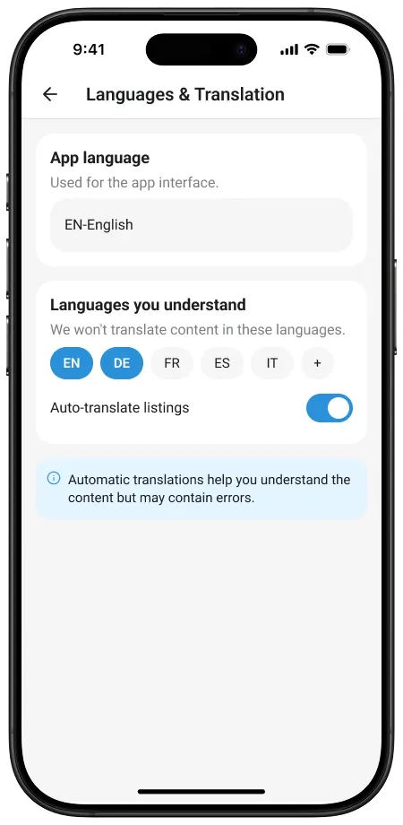
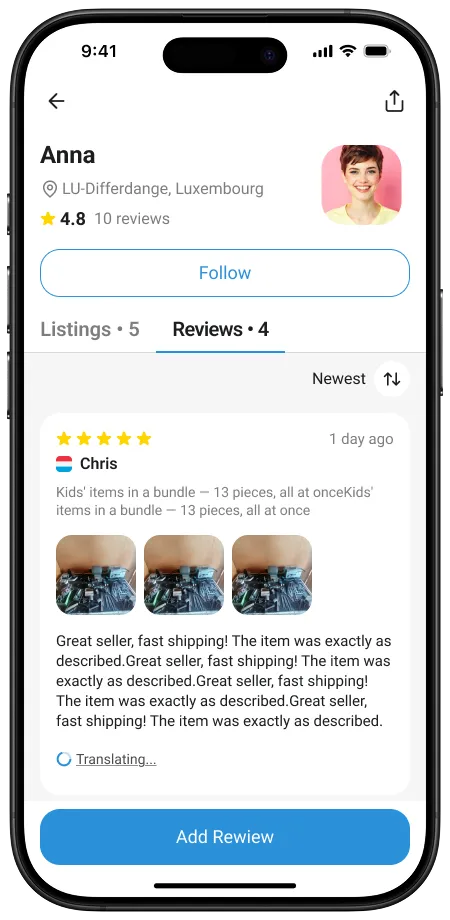
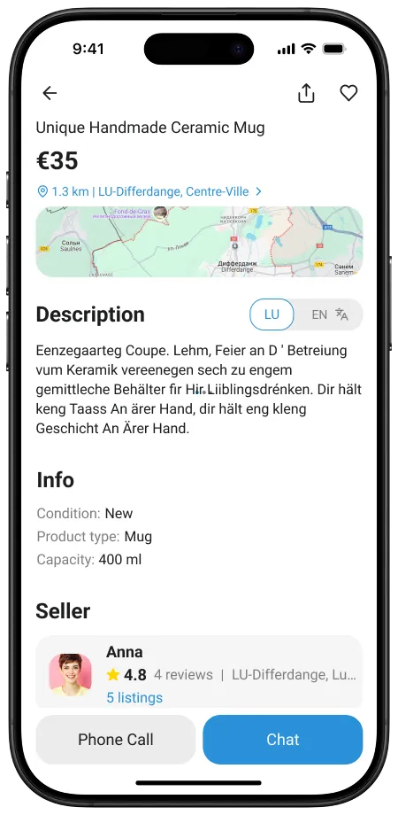
Геолокация расширяет границы маленьких городов и делает поиск объявлений удобнее. Пользователь видит объявления рядом с собой и может искать в других районах прямо на карте.
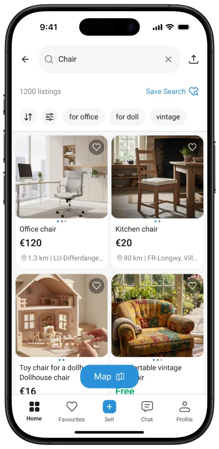
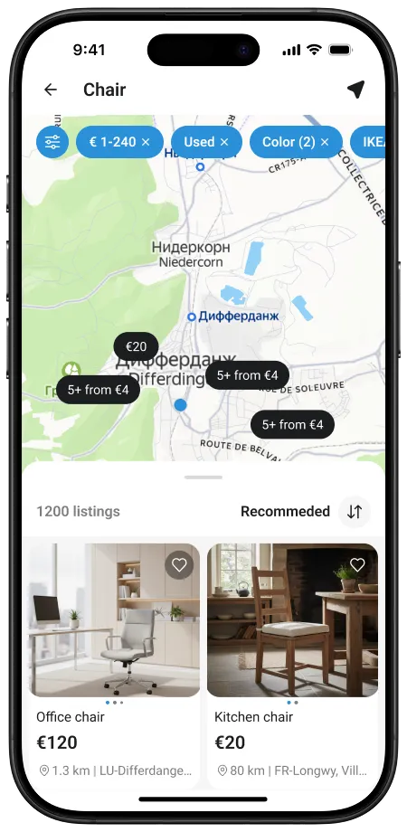
Ключевая задача — универсальный виджет характеристик товаров. Разные категории требуют разных типов данных: integer, float, boolean, multiselect. Выстроили структуру many-to-many и описали логику виджетов для каждого типа — с учётом контекста использования: создание объявления, фильтрация в поиске и отображение в карточке товара.
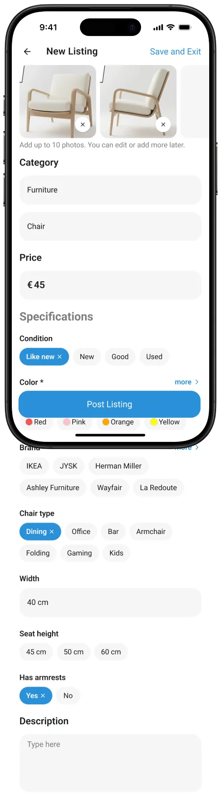
Один из ключевых сценариев — найти подходящий товар. Фильтрация построена как гибкая «простыня»: пользователь сам выбирает, по каким характеристикам искать. Реализовано с учётом привычных паттернов и технических возможностей платформы.
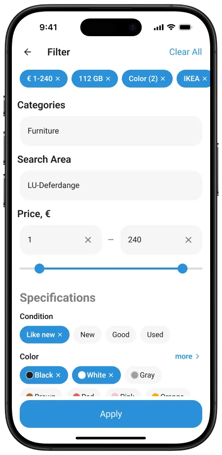
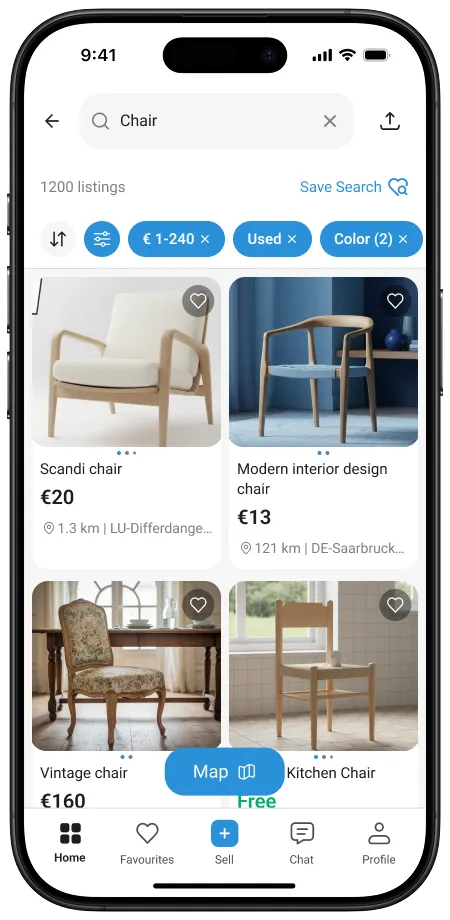
На экранах пустых состояний и системных сообщений используются 3D-иллюстрации. Объёмный стиль поддерживает дружелюбный и современный характер приложения.
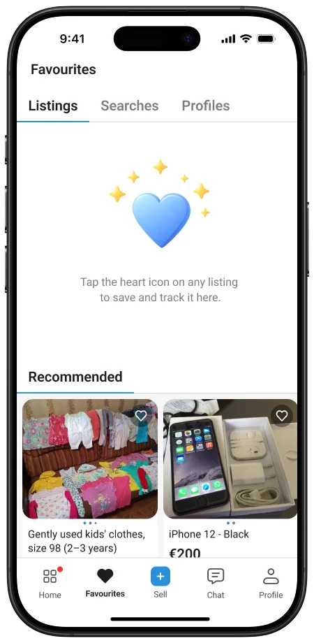
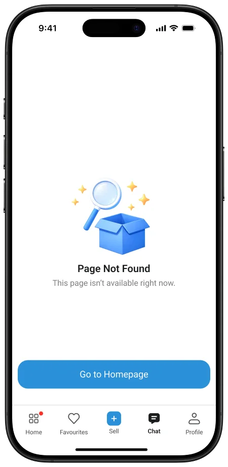
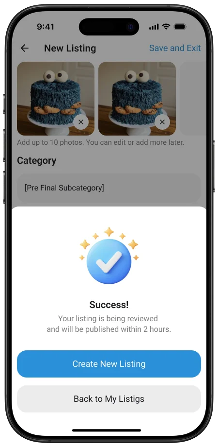
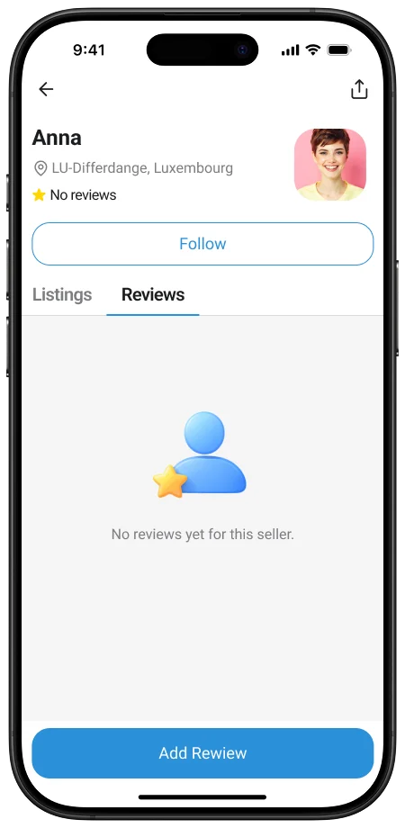
Гибкая система из 50+ компонентов, более 330 цветовых токенов для светлой и тёмной темы. Обеспечивает консистентность на 250+ экранах и ускоряет разработку.
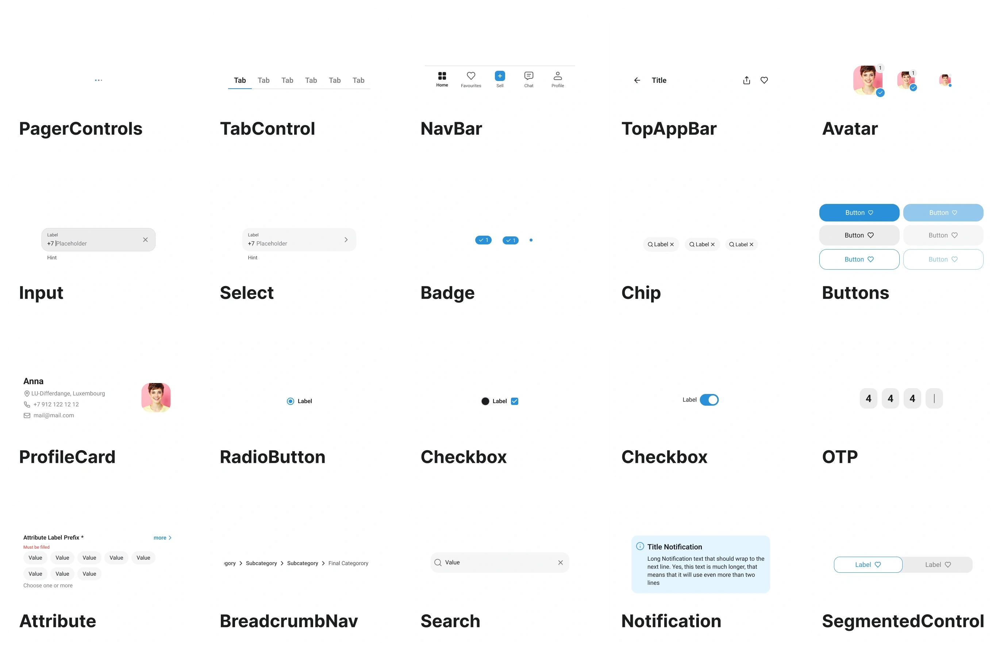
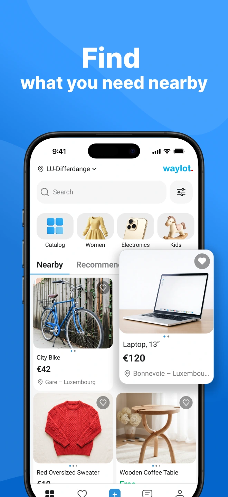
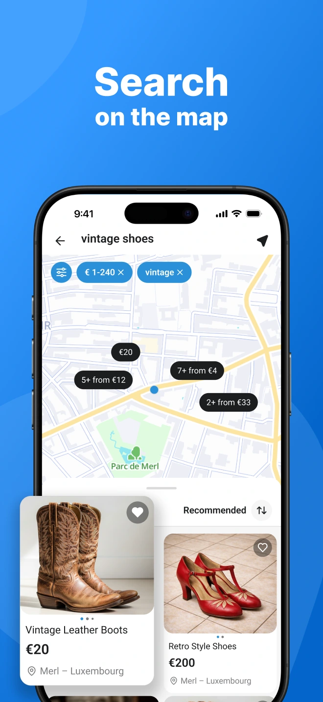
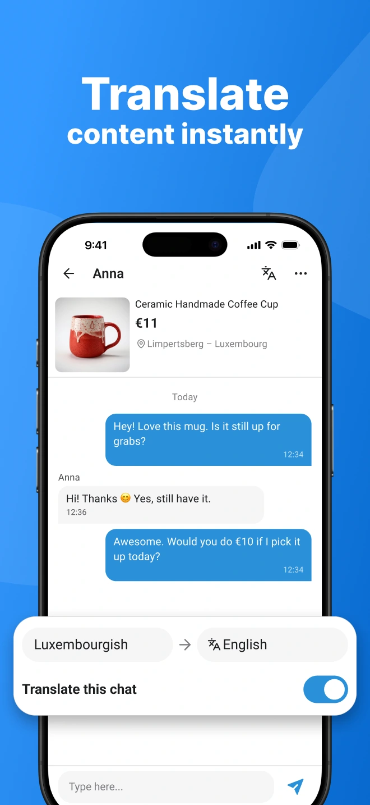
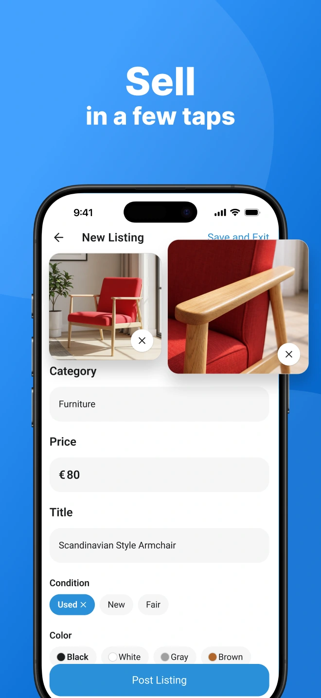
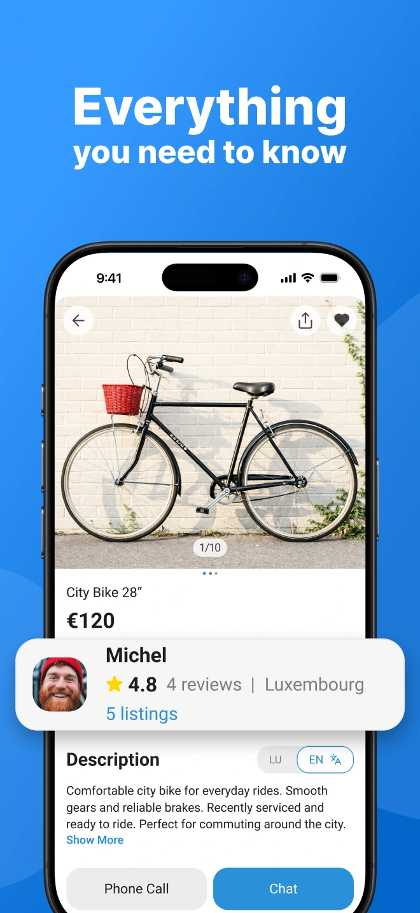
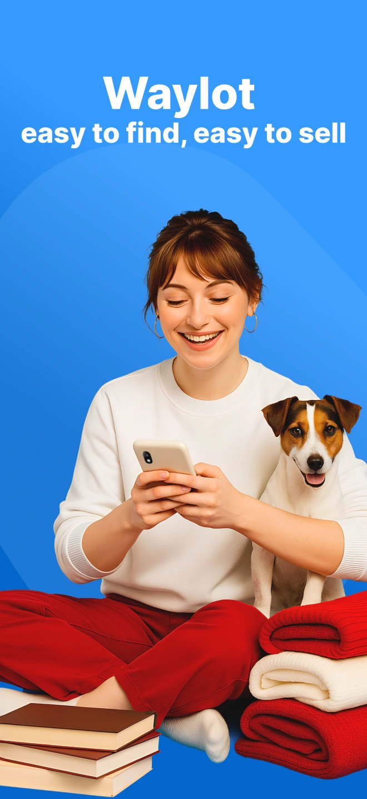